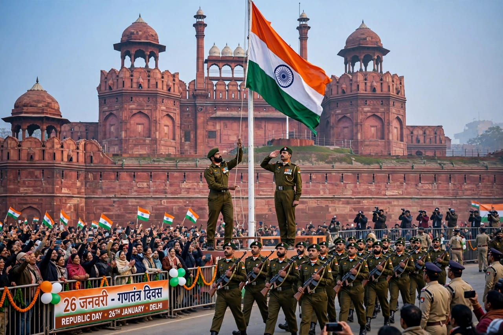
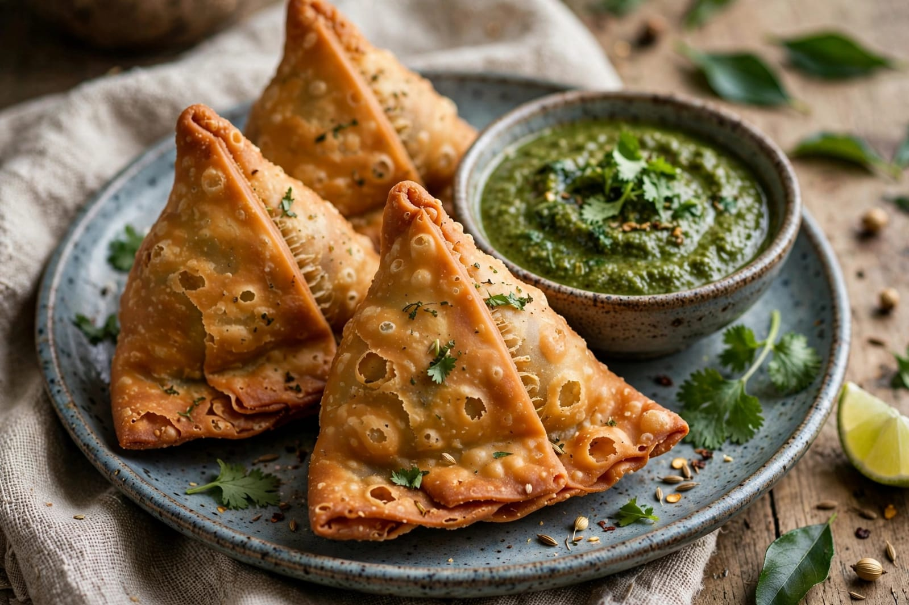

About Republic Day
Republic Day is one of the most important national celebrations of India. It is celebrated every year on 26th January. Republic Day marks the day when the Constitution of India came into effect. The Constitution came into effect on 26th January 1950. India became a republic on this important day. Republic Day is celebrated with great pride and enthusiasm. People remember the importance of the Indian Constitution. The Constitution provides the basic framework for the country. It explains the rights and duties of citizens. It also describes the powers and responsibilities of the government. Republic Day reminds people about democracy and equality. The day is celebrated across the country. Schools and colleges organize special programs. Students participate in cultural activities. Flag hoisting ceremonies are held in many places. The national anthem is sung during the celebrations. Patriotic songs and speeches are presented. Students may participate in parades and competitions. Many schools organize essay and drawing competitions. People decorate schools and public places. The Indian national flag is an important part of the celebration. People show respect to the national flag. Republic Day creates a feeling of patriotism among citizens. It reminds people of their responsibilities towards the nation. The day teaches the importance of unity and harmony. India is a country with many languages, cultures and traditions. Republic Day celebrates this diversity and unity. People from different communities celebrate the day together. The celebration promotes national unity. It also creates awareness about constitutional values. Republic Day is an important day in Indian history. It reminds citizens to respect the Constitution. The day inspires people to become responsible citizens. Republic Day is celebrated with happiness and national pride.
The main Republic Day celebration takes place in New Delhi. A grand parade is organized as part of the national celebration. The parade displays India's cultural diversity and national achievements. Different states and union territories take part in the parade. Cultural performances are presented during the celebration. Tableaux show the traditions and achievements of different regions. The armed forces also participate in the parade. Soldiers display discipline and dedication during the ceremony. Different military units take part in the parade. The parade is watched by people across the country. The President of India plays an important role in the Republic Day ceremony. The national flag is displayed with great respect. The national anthem is played during the ceremony. Gallantry awards are also associated with Republic Day celebrations. Awards recognize acts of courage and service. Children may also receive awards for bravery. Republic Day celebrations are organized at state and local levels. Governors and other officials attend official ceremonies. Schools conduct flag hoisting programs. Teachers and students participate in cultural events. Patriotic speeches are delivered during school programs. Poems and songs about India are performed. Republic Day helps students understand the importance of the Constitution. It teaches the values of justice, liberty and equality. It also reminds citizens about their fundamental duties. The day encourages people to respect democratic values. It promotes a sense of responsibility towards society. Republic Day is celebrated with great respect throughout India. The celebration brings people together. It creates a strong feeling of national unity. The day reminds us of the importance of democracy. Republic Day is a symbol of India's democratic identity.
Food is also enjoyed during Republic Day celebrations. Schools and communities may distribute sweets. Families may prepare special food at home. Laddu is a popular Indian sweet. Jalebi is also enjoyed during many celebrations. Samosa is a popular snack served at gatherings. Kheer is a traditional Indian dessert. Gulab jamun is another popular sweet. Different regions prepare different traditional foods. Food reflects the cultural diversity of India. People share sweets with friends and family. Children enjoy special treats during school celebrations. Community programs may include food stalls. Families spend time together during the holiday. Republic Day is also an opportunity to learn about India's history. People remember the leaders and contributors who helped shape the nation. The day encourages citizens to respect the Constitution. It promotes unity, equality and responsibility. Republic Day reminds people that every citizen has an important role. People are encouraged to contribute positively to society. The celebration creates a sense of pride in the country. Republic Day is an important national festival of India. It is celebrated with respect, joy and patriotism.
Special Foods

Laddu
Laddu is a popular Indian sweet enjoyed during special celebrations.

Jalebi
Jalebi is a sweet dish commonly enjoyed during festivals and celebrations.

Samosa
Samosa is a popular crispy snack served during gatherings.